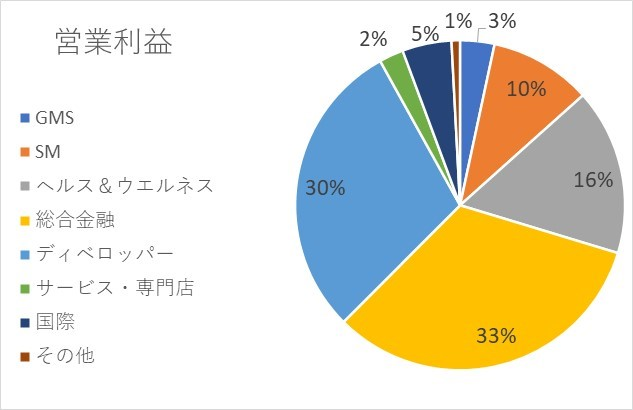
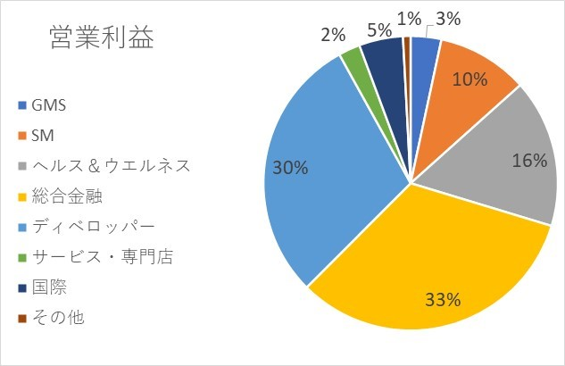

イオン企業分析 其の11
2020/5/23
イオンの企業分析を行っていきます。（11ページ目）
イオンの事業内で、どの事業が花形でどの事業が落ちこぼれなのだろうか？ （前半）
目次
- 1 事業別営業利益率とは
- 2 GMS事業
- 3 SM事業
- 4 ヘルス＆ウエルネス事業
事業別営業利益率
これまで、事業別の営業利益について分析していきましたが、 それでは単なる営業利益の増減しかわからないので、営業収益の増減に伴って 営業利益も変化しているのか、営業収益率と比較することによって、消費者意識や市場変化などの外的要因によって変化しているのかが 分かりにくいため（今までの分析結果から感覚的にわからなくもないが）、きっちりまとめておきます。
これから示すグラフは、総営業収益・利益に対してのその年の各事業の営業収益・利益の割合を 示しているため、各事業がイオンの営業収益・利益にどの程度貢献しているかを考えていただければ。
＊実際には、調整額があるため、各事業の営業収益・利益の合計が100％にならないが、 その内容が不明のため無視する。
*変動差が1％ほどでも数千億・数兆の世界なので、たとえ1％でも損益の差は大きい。
各事業の分析に移る前に2020年の営業収益と営業利益の各事業の占める割合を見ておく。（下図）
 

イオンの場合は、営業収益が高いからといって必ずしも営業利益が高いわけではないということがわかるだろうと思います。
さて、現在の状態を踏まえた上で、各事業の直近5年の営業収益・利益の変化を見ていきます。
GMS事業
GMS事業だが、2017年では、直近5年で収益率が最大にもかかわらず利益率が最小のため、 前記事でも紹介したように効率の良い経営を行うための 動機となったのではないかと考えられます。
翌年から改善されてはいるが、依然収益に対して利益率が低いことは変わらないため、 改善の余地は大いにあると考えています。
しかし、GMS事業はショッピングモールでの顧客収集に大きな役割を果たしているため、 間接的に他事業の利益にかかわっているのかと。 そのため、イオンになくてはならない事業のため 今後に期待したいと思います。
SM事業
SM事業だが、収益した分だけ利益に反映されているという印象を受けるが、既に 収益は全体の35％ほどを占めているが、利益率は全体の15％ほどのため、 やはりGMS事業と同じように経営システムの改革が必要だろうと思われる。
しかし、前記事でも紹介したように 経営システムの改革をすでに進めているため、うまくいけば利益をさらに伸ばすことができそうですね。
この改革は2025年を目処にしているため、ここ5年の動きに注目したいと思います。
ヘルス＆ウエルネス事業
ヘルス＆ウエルネス事業だが、営業収益率・利益率ともに上昇傾向にあり、それぞれ10%、16％となっている。 この事業は、ウエルシアHDがほとんどを占めていますが、この業界の中でも業績を上昇させ、トップクラスの収益を得ているので、 これからも業績は伸びていくだろうと考えています。(詳しくは、こちら)
そのため、イオンはヘルス＆ウエルネス事業にさらなる投資をしていくのではないかと考えられます。
ゆくゆくは、イオンの花形になる事業になるかもしれませんね。
総合金融事業


総合金融事業だが、グラフの推移を見てみると、営業収益率は上昇しているが、 営業利益率は2017年をピークに頭打ちとなっていることがわかる。 2017年に比べると業績は下がっているといえます。
しかし、数字を見てみると、営業収益率が5％ほどなのにもかかわらず、営業収益率は全体の3分の1 を占めているため、収益の多くを利益として生み出せる事業だと言えます。つまり、収益が増えれば増えるだけ他の事業よりもイオンに貢献できるため、 イオンとしては優先的に事業拡大を目指していきたい事業といえるのではないかと。
この事業が儲かるためには、イオン銀行などの金融事業の顧客の増加が必須であり、そのためには、大手の銀行業界に負けないほどの メリットをイオンのブランド力を売りにして獲得していかなければならないと考えます。
つまり、他のイオンの事業が拡大していけば、顧客にとってのイオンの金融事業と契約するメリットが増え、 比例的に総合金融事業の営業利益が増加するだろうと考えられます。
その観点から考えると、イオンの営業利益は年々上昇しているため、これからも期待できる事業なのではないかなと思います。
後半は次ページで紹介します。
 2020/5/20
2020/5/20